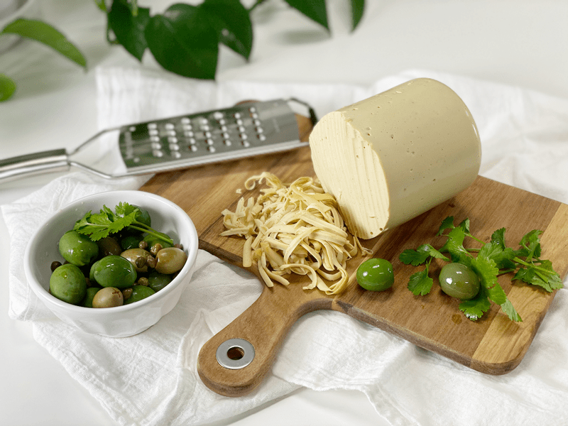
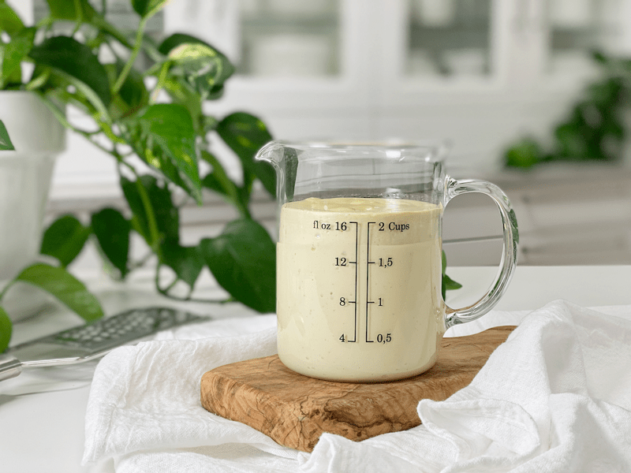
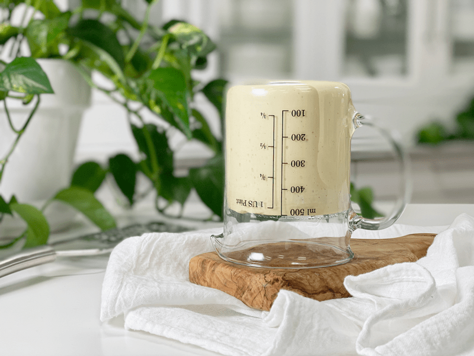
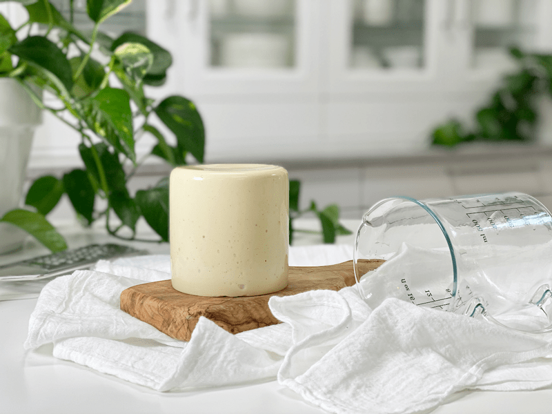
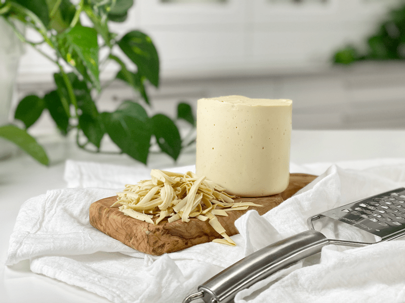

Mozzarella Cheese | Vegan | Oil-Free
I am going to dive right into this! This cheese recipe isn’t completely raw as it contains agar-agar, which is a seaweed powder. If you are new to using agar or haven’t even heard of it, please click (here) to learn a bit more, after all, it’s a fun ingredient to work with.

You can use just about any container/mold when making agar cheeses. I never line them or grease them… they just pop out. Do know that any indention, markings, lines, or ridges that are in the container will be imprinted on the cheese. I once used a plastic container that said “Recycle” on the bottom… so when I popped the cheese out, the top read “Recycle,” which I thought was pretty darn comical.
I am not claiming that this cheese tastes precisely like Mozzarella cheese, but it’s close enough for me. You will find it great to eat with crackers, add to sandwiches or shredded over salads.
Cheese Addiction AKA Dairy Crack
If you talk to anyone who has recently switched or is considering a switch to a plant-based diet, most people will claim that cheese and bread are their main weaknesses. Cheese almost more so than bread. So why is this?
We have casomorphins, which are protein fragments, derived from the digestion of the milk protein, Casein. The characteristic of casomorphins is that they have an opioid effect on the brain. Opioids are among the world’s oldest known drugs. Common examples of opioids are oxycodone, hydrocodone, hydromorphone, methadone, morphine, opium, and even heroin! Can we now add cheese in the midst of those “hardcore” drugs? Kind of scary. Neal Barnard, MD, said, “Since cheese is processed to express out all the liquid, it’s an incredibly concentrated source of casomorphins—you might call it dairy crack.” (Source: VegetarianTimes.com)
The side effects of opioids include sedation (ever feel like a nap after a meal heavy in cheese?), constipation, and a strong sense of euphoria. Well, that makes sense… cheese use to always constipate me. Euphoria?? I had to laugh because you can see euphoria on people’s faces as they pull a slice of hot bubbling pizza from the pan, creating a bridge of cheese from the slice to the whole pie. You’ve seen it or experienced it too, huh? And just like any drug, dependence can develop with ongoing administration, leading to withdrawal symptoms with abrupt discontinuation. (source)
Food for thought… literally! Anyway, it’s time to move on to this casomorphin-free cheese. No opioids on my watch. :) I hope you enjoy this recipe. If you have any thoughts, questions, or comments, please leave them below. Blessings, amie sue
 Ingredients
Ingredients
- 1 cup (142 g) cashews, soaked
- 3/4 cup (163 g) water
- 1/4 cup (27 g) nutritional yeast
- 2 Tbsp (30 g) raw coconut vinegar or Apple cider vinegar
- 1 Tbsp (6 g) onion powder
- 1 tsp (7 g) smoked salt
- 1/2 tsp (1 g) garlic powder
Agar gel:
Preparation:
- Place the cashews in a glass bowl, along with 4 cups of water.
- The soaking process will help reduce phytic acid, which will aid in digestion.
- The soaking also softens the cashews, so they blend nice and creamy.
- After the cashews are through soaking, drain, and rinse.
- In a high-powered blender combine the; cashews, water, nutritional yeast, vinegar, onion, smoked salt, and garlic powder. Blend until creamy and smooth.
- Due to the volume and the creamy texture that we are going after, it is essential to use a high-powered blender. It could be too taxing on a lower-end model.
- Blend until the batter is creamy smooth. You shouldn’t detect any grit. If you do, keep blending.
- This process can take 2-4 minutes, depending on the strength of the blender. Keep your hand cupped around the base of the blender carafe to feel for warmth if the batter is getting too warm. Stop the machine and let it cool. Then proceed once cooled.
- In a small saucepan, whisk together 3/4 cup of water and the agar.
- Bring to a boil for about one minute, stirring constantly.
- Reduce the heat and simmer for about 5 minutes, continually stirring until the agar is dissolved completely.
- I prefer to use agar powder. Click (here) if you need to convert the measurement due to use agar flakes.
- Start the blender creating a vortex, CAREFULLY add the agar gel and blend just long enough to incorporate everything together. Don’t over-process. The batter will start to thicken.
- Be careful that the hot liquid doesn’t splatter, hitting your skin.
- What is a vortex? Look into the container from the top and slowly increase the speed from low to high, the batter will form a small vortex (or hole) in the center. High-powered machines have containers that are designed to create a controlled vortex, systematically folding ingredients back to the blades for smoother blends and faster processing… instead of just spinning ingredients around, hoping they find their way to the blades.
- If your machine isn’t powerful enough or built to do this, you may need to stop the unit often to scrape the sides down.
- Pour the mixture into the mold of choice.
- Store in an airtight container in the fridge for up to 5 days.
- You can grate this cheese using a box grater, or you can slice it any way you wish.
-

-
You can use any container as a mold.
-

-
Once set, turn outside and tap the bottom of the container so it can slide out.
-

-
There it stands… a thing of beauty.
-

-
This cheese shreds perfectly as well as being sliced.
© AmieSue.com